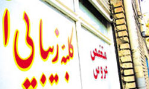

|
|
مقابله با ورود مواد مخدر در آرایشگاهها و سالنهای ورزشی زنان
Monday10 بهمن 1390
خبرگزاری فارس: معاون خانواده مرکز امور زنان ریاست جمهوری گفت: با همکاری سازمان بهزیستی طرح مقابله با ورود مواد مخدر در آرایشگاهها و سالنهای ورزشی بانوان اجرا میشود.
خبرگزاری فارس: مقابله با ورود مواد مخدر در آرایشگاهها و سالنهای ورزشی زنان
به گزارش خبرنگار زنان فارس، زهرا سجادی امروز در نشست خبری که در محل ساختمان کوثر ریاستجمهوری برگزار شد اظهار داشت: مرکز امور زنان با همکاری سازمان بهزیستی طرح پیشگیری از سوء مصرف مواد در آرایشگاههای زنانه و سالن های ورزشی بانوان را طراحی کرده است که بر این اساس بروشور و سیدیهای خاصی در آرایشگاههای زنانه استان تهران برای هشدار به زنان توزیع میشود.
وی افزود: طرح انتظام خانواده در چهار محور تشکیل، تحکیم، ایمانسازی و ترمیم خانواده آسیبدیده طراحی شده است.
سجادی با بیان اینکه طرح مطلع مهر برای زوجهای جوانی که در ۵ سال نخست زندگی مشترک خود قرار دارند در سه بخش سلامت، بهداشت، احکام خانواده و روانشناختی اجرا میشود.
معاون خانواده مرکز امور زنان ادامه داد: در بحث روانشناختی طرح مطلع مهر حقوق و مزایای زوجین نسبت به هم، ارتباط در دوران نامزدی، مهارتهای کلامی و غیرکلامی، ارتباط با همسر و خانواده همسر و مدیریت هیجان در زندگی زناشویی به زوجین آموزش داده میشود.
وی با اشاره به بحث سلامت و بهداشت خانواده در طرح مطلع مهر گفت: انحرافات جنسی و مشکلات خاص آن، نقش تغذیه در دوران قبل از بارداری و دوران بارداری و بررسی تأثیر ماهواره و اینترنت بر خانوادهها در این بخش مدنظر است.
طرح مطلع مهر در ۸ استان پر طلاق کشور اجرا میشود
وی با اشاره به اینکه طرح مطلع مهر از اول بهمن شروع به کار کرده و تا پایان این ماه ادامه دارد افزود: این طرح با همکاری سه تیم پزشکی، روانشناسی و فقهی در ۸ استان پرطلاق کشور از جمله تهران، یزد و خراسان رضوی به صورت پایلوت اجرا میشود.
طرح رحمت به منظور تحکیم خانواده ایرانی ویژه زنان و مردان در حال اجرا است
معاون خانواده مرکز امور زنان با اشاره به طرح رحمت به منظور تحکیم خانواده ایرانی عنوان کرد: این طرح در دولت نهم کلید خورد که وظایف هر یک از زوجین را به یکدیگر گوشزد میکند، طرح رحمت در سراسر کشور توسط مشاوران امور بانوان استانداریها و مربیانی که از حوزه های علمیه انتخاب شدهاند در حال اجرا است.
سجادی گفت: طرح رحمت دارای بخشهای مختلفی همچون تربیت فرزند، آسیبشناسی خانواده و امداد و نجات است که بخش امداد و نجات آن با همکاری هلالاحمر در دست اجرا است.
وی با اشاره به اینکه در طرح رحمت وظایف زوجین به یکدیگر گوشزد و آنها علاوه بر حقوق با مسئولیتهایشان نیز آشنا میشوند تصریح کرد: این طرح برای کارگران با همکاری وزارت صنعت، معدن و تجارت، وزارت نیرو و سازمان محیط زیست اجرا میشود.
وی با اشاره به اجرای طرح رحمت دانشجویی عنوان کرد: در این شاخه از طرح رحمت یک میلیون دانشجو آموزش دیدهاند همچنین برای دانشآموزان نیز بحثهایی را در رابطه با نحوه انتخاب همسر، مشکلات اخلاقی و عرفانهای کاذب در نظر گرفتهایم که فعلا در تهران و سپس در سراسر کشور اجرا میشود.
سجادی ادامه داد: طرح رحمت دانشآموزی از اسفندماه در تهران اجرا شده و در فاز نخست صد هزار دانشآموز را تحت پوشش قرار میدهد.